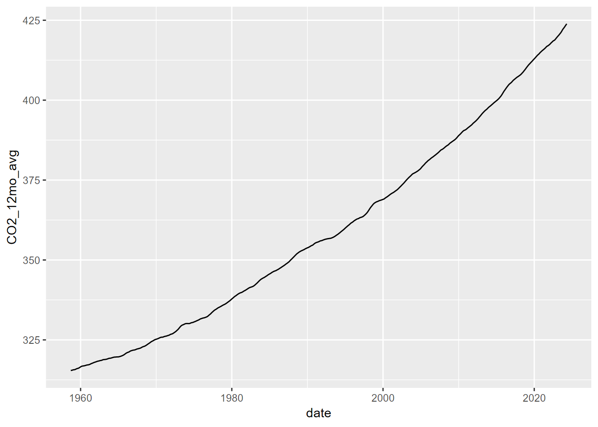
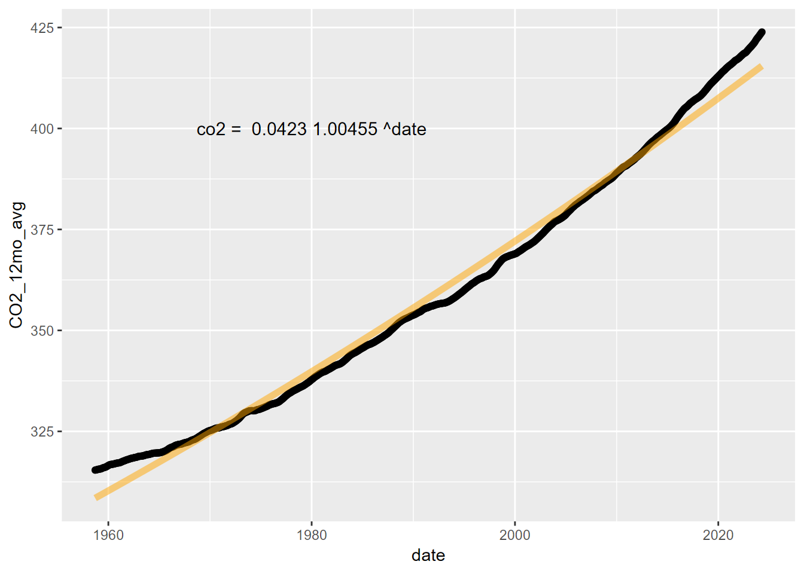
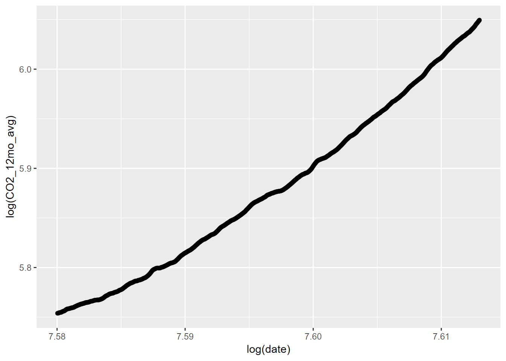
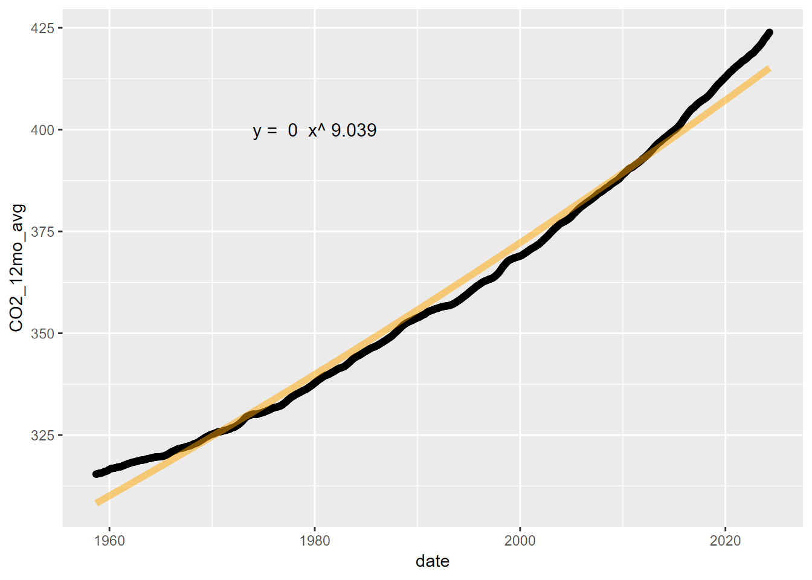
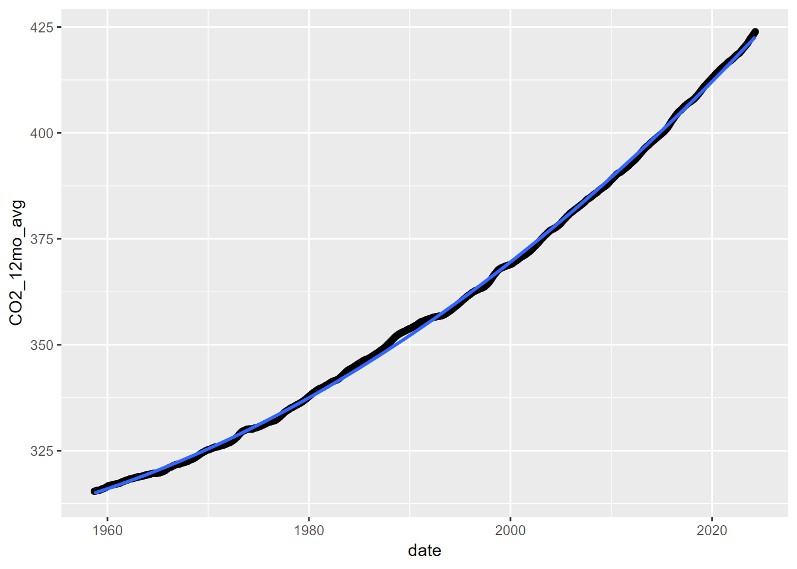
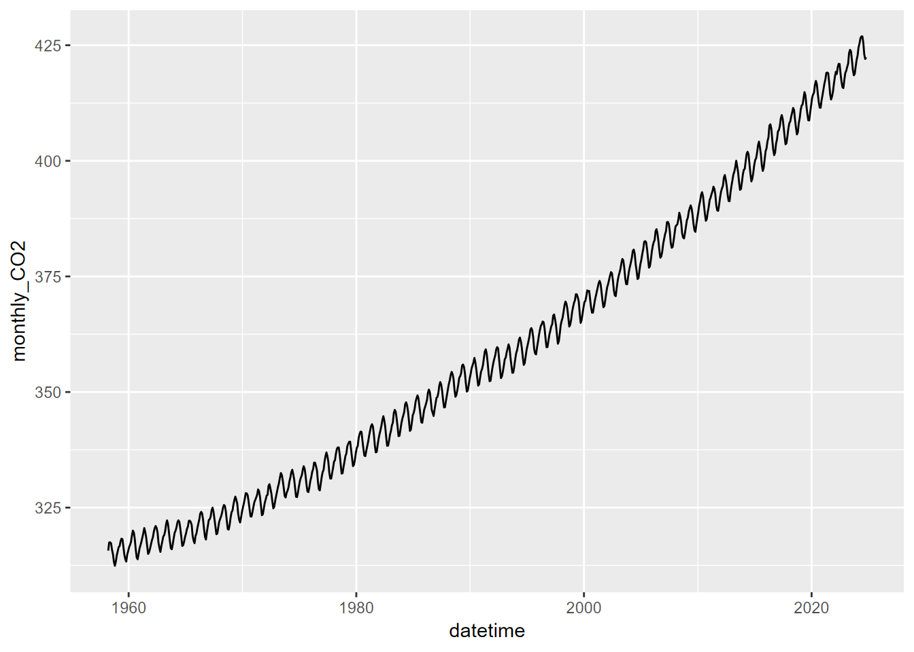
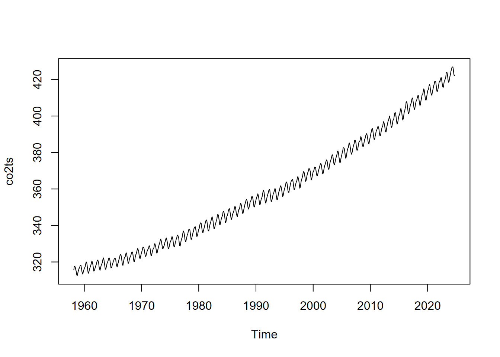
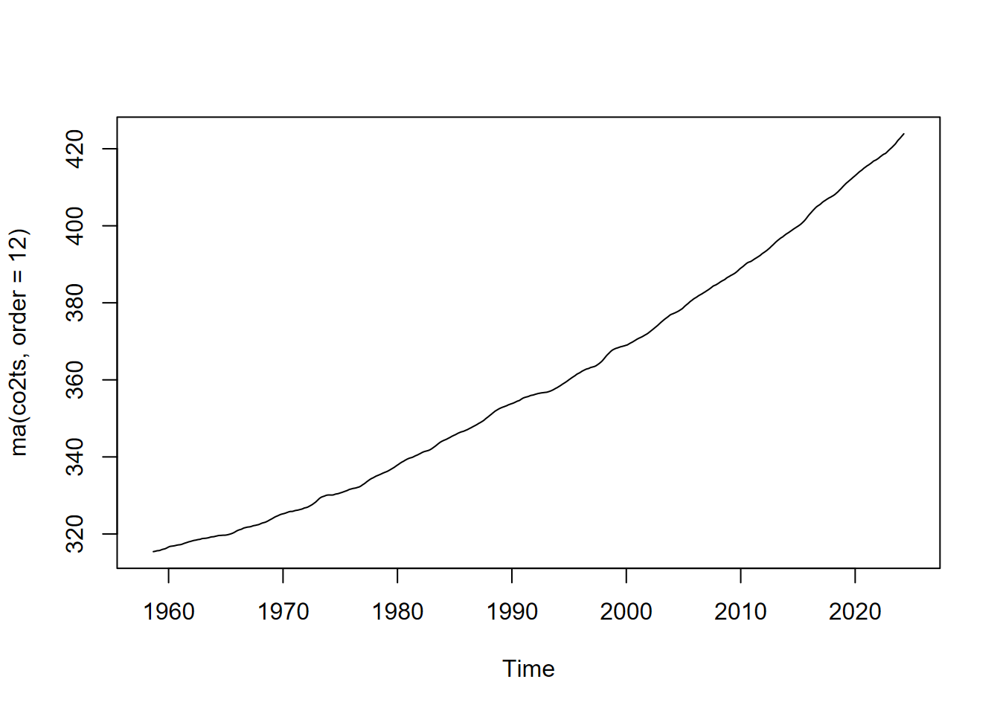

11 Atmospheric CO2 record from Mauna Loa, Hawaii
Note: Much of this notebook is based on an exercise in SFSU’s Geog 313 class developed by Andrew Oliphant, using Excel. All methods here are instead coded in R.
While there’s already a built-in co2 time series, that record only goes through 1998. We’ll download a more current data set from NOAA and the Scripps Institute. As with the built-in time series, it contains monthly average atmospheric CO2
concentration measured at the Mauna Loa Observatory on Hawai’i. These record recent (since 1958) changes in atmospheric concentrations of the important greenhouse gas, CO2 as measured at 3.3 km above the central Pacific Ocean. For further information on the observations see: http://www.cmdl.noaa.gov/ccgg/
11.1 Read the data
We’ll use R code to download and prepare the data for plotting. The source file at NOAA ftp://aftp.cmdl.noaa.gov/products/trends/co2/co2_mm_mlo.txt can be read directly into a data frame. We’ll start by using code to download the text file into the current working directory:
library(RCurl); library(igisci)
filepath <- "ftp://aftp.cmdl.noaa.gov/products/trends/co2/co2_mm_mlo.txt"
filename <- "co2_mm_mlo.txt"
result = try(download.file(filepath, paste0(getwd(),"/",filename)))Using the same path to where the file was stored, we’ll use read_table, which has the ability to use white space (any number of spaces or tabs) to delimit the data; this is handy for this text file which has varying numbers of spaces as delimiters, since data are written as fixed length but numbers are formatted to varying length. The text file also has several rows of comments at the beginning, each starting with “#”, so we’ll specify this as the comment character so those lines of text can be ignored. Unfortunately this also includes the variable names, but as these do not change we can simply assign them in code, based upon prior inspection.
datafile <- paste0(getwd(),"/",filename)
CO2_HI <- read_table(datafile,
comment="#",
col_names =c("year","month","dec_date",
"monthly_CO2","deseasonalized_CO2",
"#days","sd_days","unc.of_mon_mean"))Note that the following could also be used read data from
igisciin case the internet is down.
CO2_HI <- read_table(igisci::ex(paste0("CO2/",filename)),
comment="#",
col_names =c("year","month","dec_date",
"monthly_CO2","deseasonalized_CO2",
"#days","sd_days","unc.of_mon_mean"))CO2 concentrations are recorded in micromols of carbon per mol of dry air, which is the same thing as parts per million. Also, note that there are two CO2 records, average (monthly_CO2) and deseasonalized (deseasonalized_CO2). Notice there are several time-stamp columns; year, month and decimal date. The decimal date is produced for use as an effective x-axis value to plot the time-series because it makes a continuous, evenly spaced time series, which includes both the year plus the fraction of the year at the center of the month (i.e. year + (month-0.5)/12); we can also convert it into a POSIXct date-time format:
11.2 Plot the time series
Plot the time-series of monthly of CO2 concentrations against decimal date in ggplot, using geom_line instead of geom_point.

The record looks like saw teeth because the amount of carbon dioxide in the atmosphere changes over the course of a year. Green plants absorb carbon dioxide during the summer when they are actively growing. There is more land area in the Northern Hemisphere and so carbon dioxide concentration decreases during the summer of the Northern Hemisphere. The carbon dioxide concentration peaks in March, just before the growing season starts in the Northern Hemisphere. If you look closely, you will notice that there is a slight flattening starting in 1991 and lasting a year or so. Mount Pinatubo in the Philippines erupted in 1991 and released a large volume of sulfur dioxide, which combined with water vapor to produce aerosols. This is thought to increase both terrestrial ecosystem photosynthesis and the solubility of carbon dioxide in the oceans, both of which are important carbon sinks.
11.3 Generalize the data
In order to more closely examine the apparent increase in CO2 concentration throughout the record, we ideally want to remove the noisy seasonal signal with the saw-tooth like pattern, since change over this timescale is not associated with the broader (century scale) change. We’ll use the ma() function of the forecast package to create a 12-month moving average. Since ma() only works with single vectors, we’ll need to extract those and bind the columns to create a new data frame.
library(forecast)
CO2_date_ma <- ma(CO2_HI$dec_date, 12)
CO2_CO2_ma <- ma(CO2_HI$monthly_CO2, 12)
CO2_ma <- bind_cols(date=CO2_date_ma,CO2_12mo_avg=CO2_CO2_ma)Then we’ll plot that moving average.

11.4 Curve Fitting and Creating a Prediction
If we could write a mathematical description of the CO2 increase curve, we could use it to model future scenarios under business-as-usual emissions increases. There are linear and non-linear curve forms known mathematically such as logarithmic and exponential to describe a variety of forms in nature.
11.4.1 Exponential model
##
## Call:
## lm(formula = log(CO2_12mo_avg) ~ date, data = CO2_ma)
##
## Residuals:
## Min 1Q Median 3Q Max
## -0.011422 -0.006384 -0.003006 0.005535 0.022213
##
## Coefficients:
## Estimate Std. Error t value Pr(>|t|)
## (Intercept) -3.163e+00 3.256e-02 -97.14 <2e-16 ***
## date 4.541e-03 1.635e-05 277.75 <2e-16 ***
## ---
## Signif. codes: 0 '***' 0.001 '**' 0.01 '*' 0.05 '.' 0.1 ' ' 1
##
## Residual standard error: 0.0087 on 786 degrees of freedom
## (12 observations deleted due to missingness)
## Multiple R-squared: 0.9899, Adjusted R-squared: 0.9899
## F-statistic: 7.714e+04 on 1 and 786 DF, p-value: < 2.2e-16Now plot without the log transformed axes, we’ll need to create the curve with the model, using the coefficients.
coeff = exp(expCO2mod$coefficients[1])
slope = exp(expCO2mod$coefficients[2])
fit_func <- function(x) coeff*slope^x
co2Plot <- ggplot(CO2_ma) +
geom_point(aes(x=date,y=CO2_12mo_avg))
co2Plot <- co2Plot +
stat_function(fun=fit_func, color="orange",lwd=2, alpha=0.5)
fit_eq = paste("co2 = ", round(coeff,4), round(slope,5), "^date")
co2Plot <- co2Plot +
annotate("text",x=1980,y=400,label=fit_eq,size=4)
co2Plot
11.4.2 Power law model
##
## Call:
## lm(formula = log(CO2_12mo_avg) ~ log(date), data = CO2_ma)
##
## Residuals:
## Min 1Q Median 3Q Max
## -0.011819 -0.006666 -0.003058 0.005795 0.022970
##
## Coefficients:
## Estimate Std. Error t value Pr(>|t|)
## (Intercept) -62.7850 0.2575 -243.8 <2e-16 ***
## log(date) 9.0390 0.0339 266.7 <2e-16 ***
## ---
## Signif. codes: 0 '***' 0.001 '**' 0.01 '*' 0.05 '.' 0.1 ' ' 1
##
## Residual standard error: 0.009058 on 786 degrees of freedom
## (12 observations deleted due to missingness)
## Multiple R-squared: 0.9891, Adjusted R-squared: 0.9891
## F-statistic: 7.111e+04 on 1 and 786 DF, p-value: < 2.2e-16
Now to plot without the log transformed axes, we’ll need to create the curve with the model, using the coefficients.
coeff = exp(powerCO2mod$coefficients[1])
power = powerCO2mod$coefficients[2]
fit_func <- function(x) coeff*x^power
powerCO2plot <- ggplot(CO2_ma) +
geom_point(aes(x=date,y=CO2_12mo_avg))
powerCO2plot <- powerCO2plot +
stat_function(fun=fit_func, color="orange",lwd=2, alpha=0.5)
fit_eq = paste("y = ", round(coeff,6), " x^", round(power,3))
powerCO2plot <- powerCO2plot +
annotate("text",x=1980,y=400,label=fit_eq,size=4)
powerCO2plot
11.4.3 Second order polynomial
Let’s try a second order polynomial applied to the decimal year, the independent variable.
##
## Call:
## lm(formula = CO2_12mo_avg ~ poly(date, ord, raw = T), data = CO2_ma)
##
## Residuals:
## Min 1Q Median 3Q Max
## -1.1020 -0.5972 -0.1799 0.5144 2.0136
##
## Coefficients:
## Estimate Std. Error t value Pr(>|t|)
## (Intercept) 4.944e+04 3.147e+02 157.1 <2e-16 ***
## poly(date, ord, raw = T)1 -5.094e+01 3.161e-01 -161.2 <2e-16 ***
## poly(date, ord, raw = T)2 1.320e-02 7.936e-05 166.4 <2e-16 ***
## ---
## Signif. codes: 0 '***' 0.001 '**' 0.01 '*' 0.05 '.' 0.1 ' ' 1
##
## Residual standard error: 0.7161 on 785 degrees of freedom
## (12 observations deleted due to missingness)
## Multiple R-squared: 0.9995, Adjusted R-squared: 0.9995
## F-statistic: 7.581e+05 on 2 and 785 DF, p-value: < 2.2e-16ggplot(CO2_ma, aes(x=date,y=CO2_12mo_avg)) + geom_point() +
stat_smooth(method=lm, formula=y~poly(x,ord,raw=T))
It’s interesting that this works better than either a power-law or an exponential model.
Modeling future CO2 concentrations: You can use this equation as an empirical model to predict CO2 concentrations for a future date. Just use the equation in a cell and replace x with the year of interest. Under a business-as-usual emissions future, what will the concentrations of CO2 be in 2050? In what year will pre-industrial CO2 levels of ~285 ppm be doubled? We’ll loop through time from 2000 to 2100 and stop when the predicted CO2 is greater than double 285 ppm, the pre-industrial level.
b0 <- poly2$coefficients[1]
b1 <- poly2$coefficients[2]
b2 <- poly2$coefficients[3]
doubledCO2 <- 285*2
for (yr in seq(2000,2100)) {CO2 = (b0 + b1*yr + b2*yr^2)
if (CO2>doubledCO2) {print(paste0("By the year ",yr,", CO2 levels will have reached ",round(b0 + b1*yr + b2*yr^2)," ppm,"));
print("more than double the pre-industrial levels of 285 ppm.")
break
}
}## [1] "By the year 2072, CO2 levels will have reached 572 ppm,"
## [1] "more than double the pre-industrial levels of 285 ppm."11.5 Creating a time series object
There are various types of time series objects: base R’s ts, extensible time series in the xts package, tsibbles in the tsibble package, and probably others. We’ll use a tsibble and a ts, after starting the read process over and creating the datetime variable.
library(RCurl)
filepath <- "ftp://aftp.cmdl.noaa.gov/products/trends/co2/co2_mm_mlo.txt"
filename <- "co2_mm_mlo.txt"
download.file(filepath, paste0(getwd(),"/",filename))CO2_HI <- read_table(paste0(getwd(),"/",filename),
comment="#",
col_names =c("year","month","dec_date",
"monthly_CO2","deseasonalized_CO2",
"#days","sd_days","unc.of_mon_mean")) |>
mutate(datetime = date_decimal(dec_date)) 
Well, that’s nice, but it’s no different from what you get with just plotting from the original data frame.Let’s see if we can create a ts object, but we’ll need to specify the start month (after looking that up in the data) and the frequency of 12 months.

